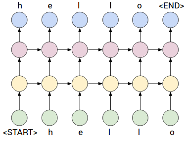

このデモでは
recurrentjsライブラリ を使用して Javascript で深層リカレントニューラルネットワーク (RNN) や LSTM ネットワーク を 学習することができます。
このデモでは 一般的な 自動誤差逆伝播がサポートされているので，任意の式グラフを設定することができます。
このデモでは 入力として 文章データを扱い 文字ごと に 文章を記憶することを学習します。
すなわち RNN や LSTM は 入力文字と それまでの時間ステップ からの 文脈 (隠れ層が扱う) を取り 系列内 の次の文字を予測します。ここでは一例を紹介します。

上の例では 深層 RNN が描かれています。すべての文字にはバックプロパゲーションで学習可能な 「文字ベクトル」 が関連付けられています。
この文字ベクトルは (学習可能な) 行列 と ベクトル との 乗算によって 第1 隠れ層表現 (黄色) に結合されます。
次に 第 2 隠れ層表現 (紫色) に結合されます。
最後に出力空間 (青) に結合されます。
出力空間は データ内の 文字数 に 等しい次元数を持ちます。
各次元は系列内の 次の 文字の確率を与えます。
すなわち このネットワーク は 常に次の文字を予測するように訓練されます。
実際には ソフトマックス関数と，損失関数として交差エントロピー損失を使用しています。
学習中に追跡する指標は
パープレクシティ perplexity と呼ばれます。
ネットワークがシーケンスの次の文字を見て，どれだけ予測と異なっていて，驚くのかを表します。
例えば、パープレクシティ (錯乱度) が 4.0 であれば ネットワーク が 次の文字候補として 4 つの文字 を予測していることを示しています。
パープレクシティの最小値，すなわち最良の場合は 1 となります。
検証テスト時には 貪欲な探索方法 で 文字ごとに反復的に予測を行っています。
将来的にはより洗練された方法 (例えばビームサーチ) を実装するかもしれません。
下では「みんなの日本語」全テキストをつかったデモになっています
モデルの保存と読み込み (JSON ファイル)
下のテキスト領域により，学習させたモデルのパラメータを JSON ファイルとして書き出したり，読み込んだりできます。
訓練済モデル:
下のボタンで学習済みモデルを読み込んで 学習後期の段階 で 予測がどのように見えるかを確認することができます。
訓練済モデルは 1 層 100 台 の LSTM で 10時間訓練されています。
下のボタンをクリックした後、約 3.0 にパープレキシティの急落を見るべきであり 予測がより良いものになるのを参照してください。